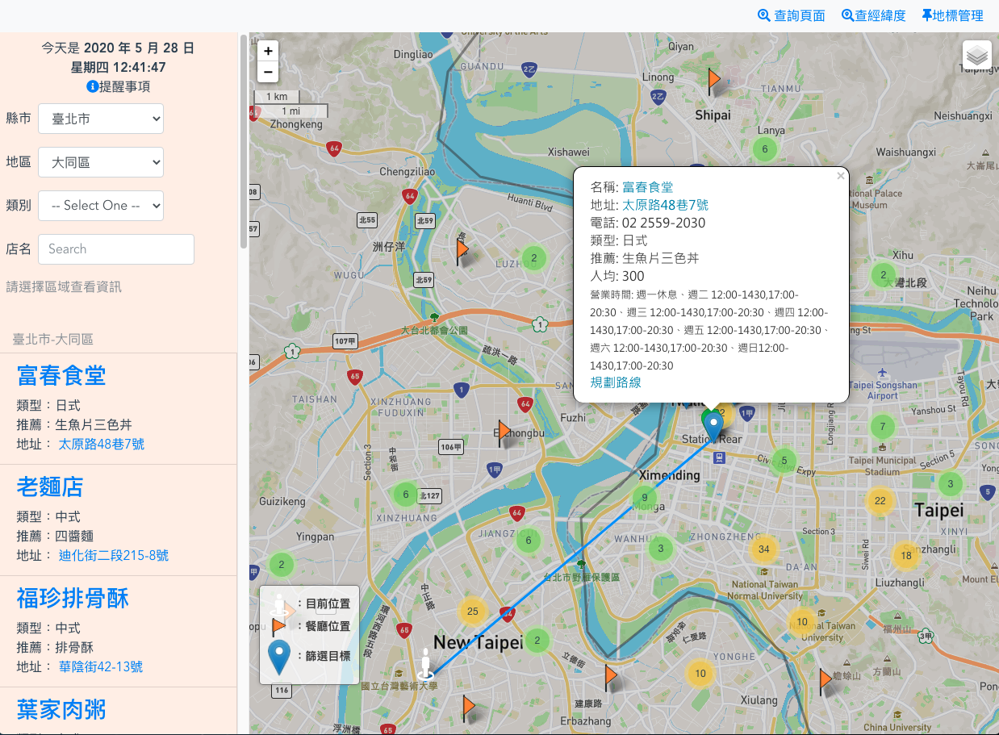
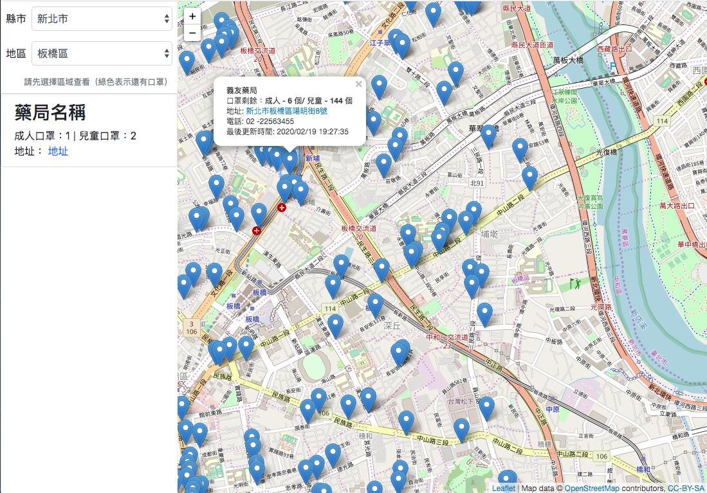

Portfolio

美食收集站
使用技術：
前端：
Vue CLI 4 建立與打包專案
Vue.js 規劃 SPA 架構
串接 API 資料存取
Vue Router 建構路由
Bootstrap 4 + SCSS
leaflet 套件運用
Mapbox 地圖使用
RWD 使用
後端：
nodejs express 使用
建立 RESTful API
串接 MongoDB 資料庫
使用 bcryptjs 做密碼加解密處理
passport.js 套件登入驗證
ejs 樣板使用
heroku 部署使用

口罩查詢地圖
使用技術：
Vue3.0 使用
串接藥局資料 API 資料存取
使用 OpenStreetMap 圖資
使用 leaflet 框架

Vue_todolis
使用技術：
Vue cli 4
Bootstrap 4
環境變數使用
Vue component 應用
vuefire 套件使用
Firebase 儲存資料運用